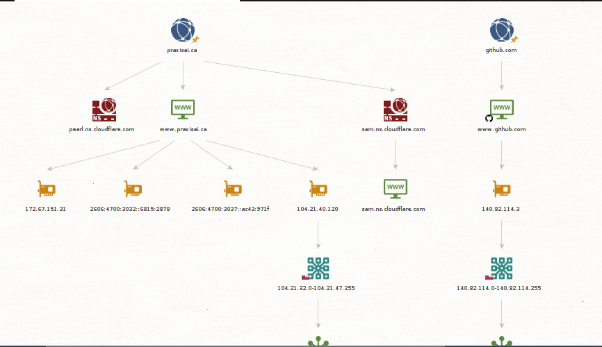

Three Probes, One Target
Captain's log, stardate 2026.285.
I have been reading Caroline Wong's The AI Cybersecurity Handbook, and its section on reconnaissance left me wondering how much of me was already in plain sight.
Tonight's mission: reconnaissance. The target... was me.
I pointed three open-source intelligence tools at my own domain to learn what a stranger could find without ever touching my servers. SpiderFoot, which scans everything at once. Maltego, which draws what it finds as a map. And recon-ng, which works one careful step at a time.
SpiderFoot returned two hundred and twenty-five findings. It looked like a lot. It was almost nothing. Every address, every "malicious" flag, every suspicious neighbour belonged not to me, but to the content delivery network standing in front of my site. Forty-four strangers share that address. Their reputations are not mine.
Maltego told the same story, one link at a time. Domain to website. Website to address. Address to network block. Network block to a single number, the autonomous system, which names whoever operates that corner of the internet. For my domain, that name was the CDN. For my portfolio, a different CDN entirely. My actual machine never appeared on the map.

Lessons recorded
- An IP address tells you the provider, not the owner. Follow it to its AS number before believing anything else about it.
- Tools fail quietly. Give Maltego a full URL where it expects a hostname and it returns nothing, with no complaint.
- Old ships need maintenance. recon-ng refused to launch at all, broken by a Python upgrade on a three-year-old Kali image.
- I ran a full scan when I meant to run a passive one. On my own domain, no harm done. On anyone else's, that is the line between research and trespass.
One question remains open. Certificate logs publish every subdomain that has ever held a certificate, and the one tool built to read them is the one that would not start. Until it does, I do not know how much of my perimeter is truly hidden.
Captain's log, supplemental. The shields held tonight. But I only know that because I fired on my own ship.
End log.